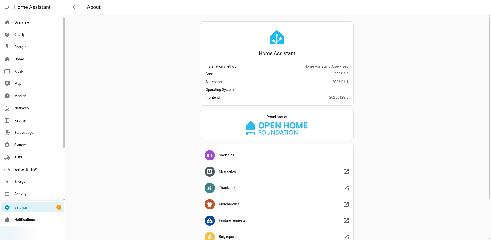

Systemübersicht
Das IceHomeAssist-System basiert auf einem Intel NUC, der als kompakter, stromsparender Heimserver fungiert. Auf dem NUC läuft Debian Linux mit Docker, in dem der Home-Assistant-Container als HA OS betrieben wird. Diese Seite bietet einen umfassenden Überblick über die Systemarchitektur, Hardware und den gesamten Software-Stack.

Das Haupt-Dashboard zeigt eine Übersicht des gesamten Systems
Architekturdiagramm
┌─────────────────────────────────────────────────────────────────┐
│ Intel NUC (x86-64) │
│ Debian 13 (Bookworm/Trixie) │
│ │
│ ┌───────────────────────────────────────────────────────────┐ │
│ │ Docker Engine │ │
│ │ │ │
│ │ ┌──────────────────────────────────────────────────────┐ │ │
│ │ │ Home Assistant OS Container │ │ │
│ │ │ ghcr.io/home-assistant/qemux86-64-homeassistant │ │ │
│ │ │ │ │ │
│ │ │ ┌─────────────┐ ┌──────────┐ ┌───────────────┐ │ │ │
│ │ │ │ HA Core │ │ Addons │ │ HACS │ │ │ │
│ │ │ │ │ │ │ │ │ │ │ │
│ │ │ │ Dashboards │ │ Node-RED │ │ 12 Custom │ │ │ │
│ │ │ │ Automations │ │ Mosquitto│ │ Components │ │ │ │
│ │ │ │ Packages │ │ Matter │ │ │ │ │ │
│ │ │ └─────────────┘ └──────────┘ └───────────────┘ │ │ │
│ │ │ │ │ │
│ │ │ Volume: /var/lib/homeassistant:/data │ │ │
│ │ │ Netzwerk: --network=host │ │ │
│ │ └──────────────────────────────────────────────────────┘ │ │
│ └───────────────────────────────────────────────────────────┘ │
│ │
│ Ports: 8123 (HA), 1880 (Node-RED), 1883 (MQTT) │
└────────────────────┬────────────────────────────────────────────┘
│ Netzwerk (LAN)
│
┌────────────┼────────────────────────┐
│ │ │
┌────▼────┐ ┌───▼──────┐ ┌─────────────▼──────────────┐
│ WiFi │ │ MQTT │ │ Cloud-Dienste │
│ Geräte │ │ Geräte │ │ │
│ │ │ │ │ Tibber, DWD, Divera, │
│ Alexa │ │ Tasmota │ │ Meross Cloud, PetKit, │
│ Bravia │ │ ESP32 │ │ Amazon (Alexa) │
│ UniFi │ │ Sensoren │ │ │
└─────────┘ └──────────┘ └────────────────────────────-┘Hardware
Intel NUC
Der Intel NUC dient als zentraler Heimserver. Durch seinen kompakten Formfaktor und den geringen Stromverbrauch eignet er sich ideal für den 24/7-Dauerbetrieb.
| Eigenschaft | Details |
|---|---|
| Plattform | Intel NUC (x86-64) |
| Betriebssystem | Debian 13 (Kernel 6.12.63+deb13-amd64) |
| Netzwerk | Gigabit Ethernet (LAN) |
| Betrieb | 24/7 Dauerbetrieb |
| Primäre Aufgabe | Home Assistant, Docker Host |
Angeschlossene Geräte
| Gerät | Verbindung | Protokoll |
|---|---|---|
| ESP32-S3 WiFi Buttons | WiFi / MQTT | Tasmota MQTT |
| Tasmota Energiesensoren | WiFi / MQTT | Tasmota MQTT |
| Amazon Echo Show 8 | WiFi / Cloud | Alexa Media Player |
| Sony Bravia TV | LAN / WiFi | Android TV / REST |
| Dreame Staubsauger | WiFi / Cloud | Dreame Vacuum / Xiaomi Cloud |
| Meross Geräte | WiFi / LAN + Cloud | Meross LAN / Cloud |
| UniFi Netzwerkgeräte | LAN | UniFi Integration |
| Fritz!Box Router | LAN | Fritz!Box / TR-064 |
| PetKit Geräte | WiFi / Cloud | PetKit Integration |

Systeminformationen in den Home Assistant Einstellungen
Software-Stack
Schichtenmodell
┌───────────────────────────────────────┐
│ Benutzer-Interface (UI) │ Dashboards, Companion App
├───────────────────────────────────────┤
│ Home Assistant Core │ Automationen, Integrationen
├───────────────────────────────────────┤
│ Addons │ Node-RED, Mosquitto, Matter
├───────────────────────────────────────┤
│ Home Assistant OS │ Supervisor, Container-Mgmt
├───────────────────────────────────────┤
│ Docker Engine │ Container Runtime
├───────────────────────────────────────┤
│ Debian 13 Linux │ Host-Betriebssystem
├───────────────────────────────────────┤
│ Intel NUC Hardware │ x86-64 Plattform
└───────────────────────────────────────┘Addon-Übersicht
| Addon | Funktion | Port |
|---|---|---|
| Node-RED addon_a0d7b954_nodered | Flow-basierte Automatisierung, WiFi-Button-Steuerung | 1880 |
| Mosquitto | MQTT Broker für Tasmota-Geräte und interne Kommunikation | 1883 |
| Matter Server | Matter-Protokoll-Unterstützung für kompatible Geräte | 5580 |
Netzwerk-Topologie
Das Heimnetzwerk wird primär über eine Fritz!Box als Router und UniFi-Geräte für die Switch- und WiFi-Infrastruktur betrieben. Der NUC ist per Gigabit-Ethernet direkt an den Netzwerk-Switch angeschlossen.
Internet
│
┌─────▼─────┐
│ Fritz!Box │ Router, DSL/Fiber, VPN
│ │
└─────┬──────┘
│
┌─────▼──────────┐
│ UniFi Switch │ Managed Switch, SNMP
│ │
├─────┬─────┬─────┤
│ │ │ │
┌────▼┐ ┌──▼──┐ │ ┌──▼──────┐
│ NUC │ │ TV │ │ │ UniFi │
│ (HA)│ │Bravia│ │ │ AP(s) │
└─────┘ └─────┘ │ └────┬────┘
│ │ WiFi
┌─────▼───┐ │
│ weitere │ ├── Echo Show 8
│ LAN- │ ├── ESP32 Buttons
│ Geräte │ ├── Tasmota Sensoren
└─────────┘ ├── Dreame Staubsauger
├── Meross Geräte
└── PetKit Geräte--network=host-Modus. Das bedeutet, er teilt sich den gesamten
Netzwerk-Stack mit dem Host-System. Dies ist erforderlich für mDNS-Discovery,
MQTT und andere Protokolle, die Broadcast/Multicast nutzen.
Datenflüsse
Kommunikationswege
| Quelle | Ziel | Protokoll | Zweck |
|---|---|---|---|
| Tasmota-Geräte | Mosquitto | MQTT | Energiedaten, Button-Events |
| Mosquitto | HA Core | MQTT | Sensor-Updates, Steuerung |
| Mosquitto | Node-RED | MQTT | WiFi-Button-Automationen |
| HA Core | Tibber API | HTTPS | Strompreise, Verbrauchsdaten |
| HA Core | DWD API | HTTPS | Wetterdaten, Niederschlag |
| HA Core | Amazon API | HTTPS | Alexa Media Player Steuerung |
| HA Core | Divera API | HTTPS | THW-Alarmierungen |